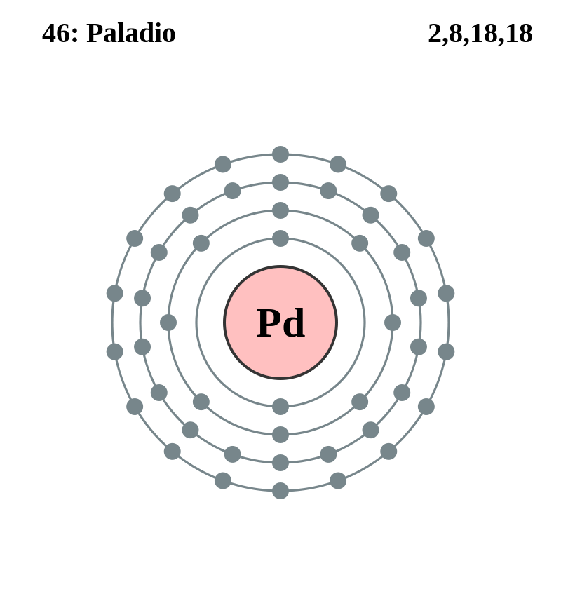

|
|
||
|
Paladio Es un metal blanco plateado que no se deslustra cuando se expone al aire. Es blando y dúctil cuando está recocido y su resistencia y dureza aumentan cuando se trabaja en frío. A temperatura ambiente, el paladio puede absorber el hidrógeno en cantidades de hasta 900 veces su propio volumen. El paladio puede utilizarse como catalizador para los procesos de hidrogenación y deshidrogenación. Sus aleaciones se usan en joyería y se puede formar una hoja de paladio (grosor de 1/250 000 pulgadas). El metal de paladio se utiliza en la odontología, la fabricación de relojes, instrumentos quirúrgicos y contactos eléctricos. |
 |
DATOS Número Atómico: 46 Peso Atómico: 106.4 Electronegatividad: 2,20 Configuración Electrónica: 4d10 Estados de Oxidación: +2,4 No. de Electrones de Valencia: 9 |